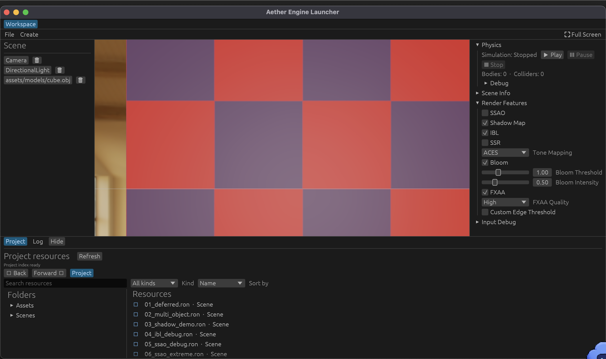

2026-10-15 更新。下方截图来自运行中的 Release Launcher，展示 18_file_mesh.ron 场景和底部 Project 资源浏览器。截图时没有选中资源，因此不把它作为预览图尺寸的证据；预览边界由自动化 UI 测试直接检查。
这是一张静态窗口截图，不能在图上拖动分割条。它记录 Project 浏览器当前布局；下方自动测试覆盖了选中资源后的预览位置和尺寸。

18_file_mesh.ron · 当前未选中资源| 复现条件 | 选中 384 × 384 方形图片，在异步预览加载期间向下缩小底部 Project 面板。 |
|---|---|
| 修复方式 | 把资源预览放进固定视口的垂直滚动区域，避免精确图片高度进入父面板的最小高度计算。 |
| 图片位置 | 自动化测试从 egui 绘制形状读取实际图片矩形，确认它位于 Resources 列表右侧。 |
| 尺寸稳定 | 图片加载后连续渲染 20 帧，图片矩形高度保持在 1 point 误差内；Project 面板高度没有回弹。 |
| 代码位置 | crates/aether-launcher/src/app/workspace/project_panel.rs 与 workspace_preview_tests.rs。 |
| 验证结果 | ./scripts/verify-ci.sh 全通过；Engine 424 项、Launcher 169 项测试通过；模块健康检查 382 个 Rust 文件、0 个超限。 |
截图范围：截图展示的是 Release 窗口中的场景和未选择资源时的 Project 列表。它不是拖拽操作录像；尺寸回归由真实 egui 输入事件和绘制几何断言覆盖。